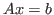
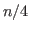

Next: About this document ...
Daeshik Choi
Analysis of a Two-grid Aggregation-based Algebraic Multigrid Method on centrosymmetric and symmetric positive-definite matrices
Southern Illinois University Edwardsville
Dept of Mathematics and Statistics
P O Box 1653
Edwardsville
IL
62026-1653
dchoi@siue.edu
For a given matrix  which is a centrosymmetric and symmetric
positive-definite matrix with identical diagonal entries, we analyze the
-norm of errors of a two-grid aggregation-based algebraic multigrid
method to the linear system
which is a centrosymmetric and symmetric
positive-definite matrix with identical diagonal entries, we analyze the
-norm of errors of a two-grid aggregation-based algebraic multigrid
method to the linear system

. More precisely, we will show that the
-norm of the error at each step is reduced by a constant which can be
computed by solving a generalized symmetric positive-definite eigenvalue
problem
of size 
, where  is the size of
.
is the size of
.
Copper Mountain
2014-02-23